Recurring interaction patterns across eight genres
ChatGPT with sampling, no repetition penalty and no attack. Eight genres, all 132 features.
The empirical contribution is the identification and mathematical characterization of recurring Human-AI feature relationships. Bands, collective following and local spread are the research objects. The formulas and analysis system support their description. Compare discovery, structural development and the frozen final evaluation; these have different evidence roles.
Frozen final evaluation complete. Four specified average components have positive approximate simultaneous intervals on 1,195 new source pairs, with genre exceptions. Nonlinear two-member reference curves discriminate better than the three-member score; the joint formula improves mean-response reconstruction. Complete shape and necessary higher interaction order remain unestablished. All final data are now used.
Final results and nonlinear controls
Loading the verified final evaluation…
Earlier structural check — subsequently used for formula development
Loading the verified check…
Loading the numerical graph values…
Choose a joint configuration
C04, B06 and S01 are linked to the stated frozen components. The other starting configurations are exploratory nominations, not additional confirmed findings.
Human circles and ChatGPT diamonds. When a fourth feature supplies colour, class is shown by marker shape. All genres use identical axes and scales. No fitted curves are drawn.
Rotate the joint feature cloud
Each point retains all features of one document. Click it to inspect its numeric tuple and the source-matched point. A connecting line links a matched pair; it is not a time trajectory.
No point selected.
Compare the joint band in every genre
Human and ChatGPT are shown side by side. Two members locate the point, a third supplies colour, and the fourth can supply marker size. Inspect shape, branches and colour progression through the configuration.
Follow more features together
Add any features from the full CSV. Each line connects feature values within one document from the focused genre. Lines do not imply time or causation. The first three selected features remain the 3D axes; colour and size can display two more.
Complete final all-genre atlas
These are the recorded final tuples, not fitted reconstructions. Every eligible document is retained: 150 per class and genre except poetry with 145. Common ranges and discovery-fitted transforms are unchanged. Recurring components have the stated exceptions; the clouds are not identical across genres.
C04 · Sentence centre and spread · all eight genres
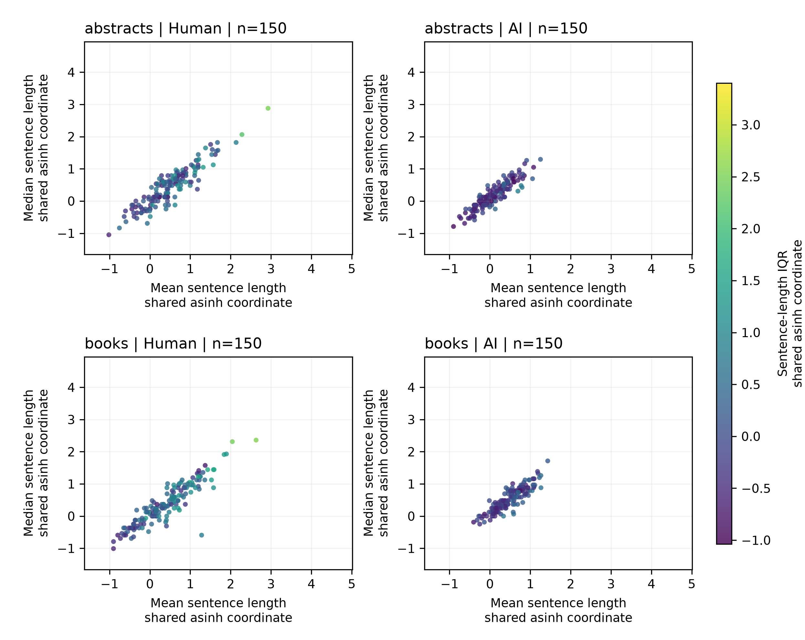
Figure S1. Mean and median sentence length supply the axes; sentence-length IQR supplies colour. All three coordinates use the common discovery-fitted asinh transform. Every eligible final document is retained. Axes and colours, where applicable, share their full range across all eight genres and both classes. No final response curve was fitted. Each panel contains 150 documents except poetry with 145.
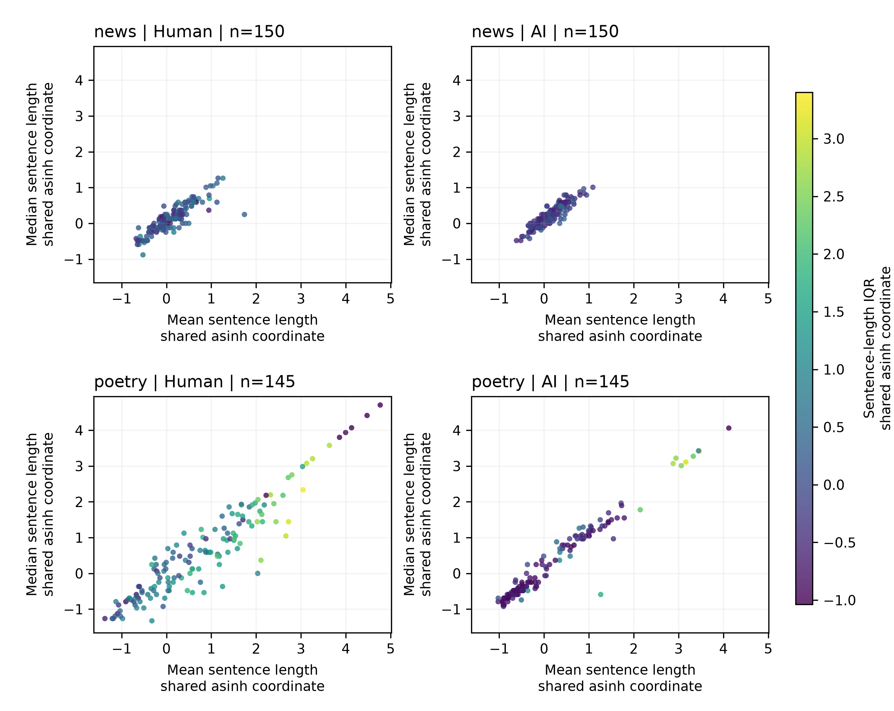
Figure S2. Mean and median sentence length supply the axes; sentence-length IQR supplies colour. All three coordinates use the common discovery-fitted asinh transform. Every eligible final document is retained. Axes and colours, where applicable, share their full range across all eight genres and both classes. No final response curve was fitted. Each panel contains 150 documents except poetry with 145.
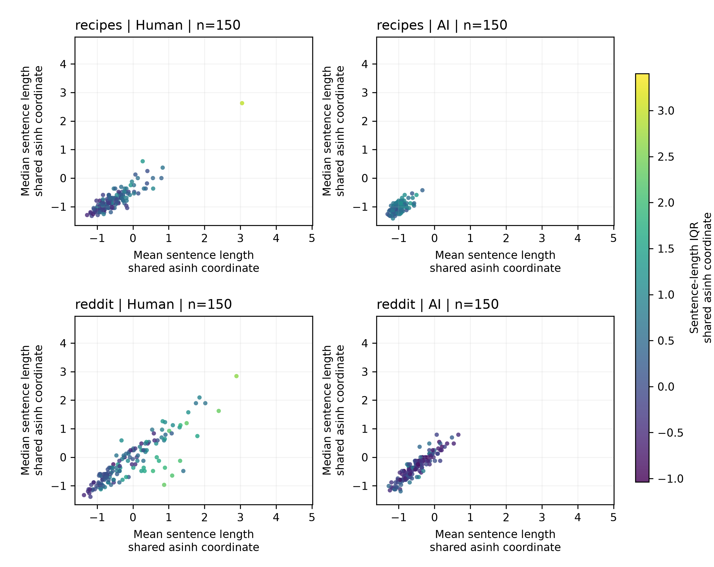
Figure S3. Mean and median sentence length supply the axes; sentence-length IQR supplies colour. All three coordinates use the common discovery-fitted asinh transform. Every eligible final document is retained. Axes and colours, where applicable, share their full range across all eight genres and both classes. No final response curve was fitted. Each panel contains 150 documents except poetry with 145.
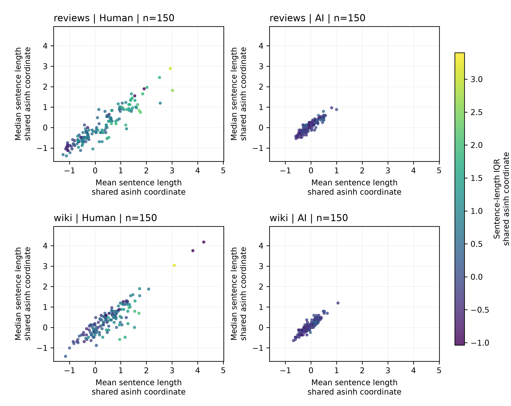
Figure S4. Mean and median sentence length supply the axes; sentence-length IQR supplies colour. All three coordinates use the common discovery-fitted asinh transform. Every eligible final document is retained. Axes and colours, where applicable, share their full range across all eight genres and both classes. No final response curve was fitted. Each panel contains 150 documents except poetry with 145.B06 · Clause band and dependency depth · all eight genres
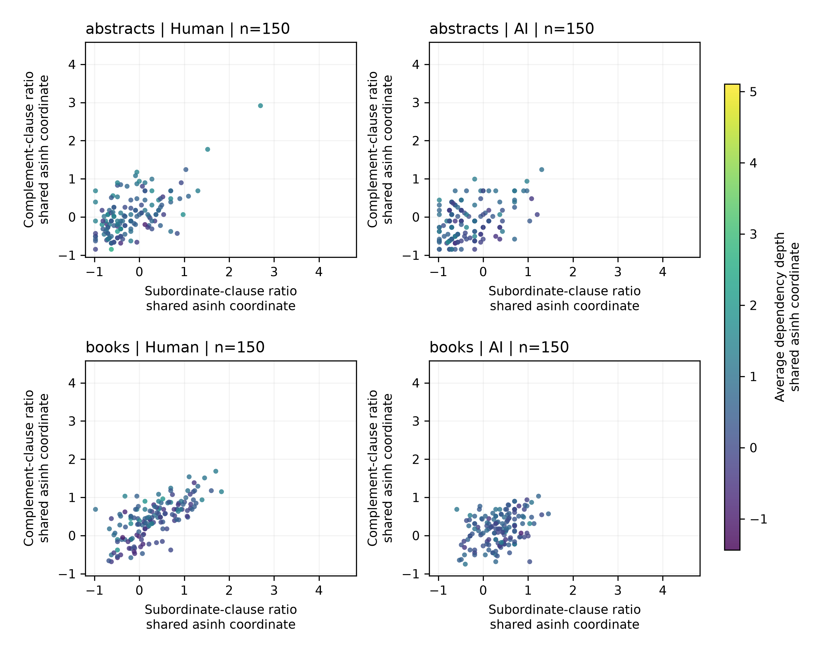
Figure S5. Subordinate and complement-clause ratios supply the axes; average dependency depth supplies colour. All three coordinates use the common discovery-fitted asinh transform. Shared clause counts qualify interpretation. Every eligible final document is retained. Axes and colours, where applicable, share their full range across all eight genres and both classes. No final response curve was fitted. Each panel contains 150 documents except poetry with 145.
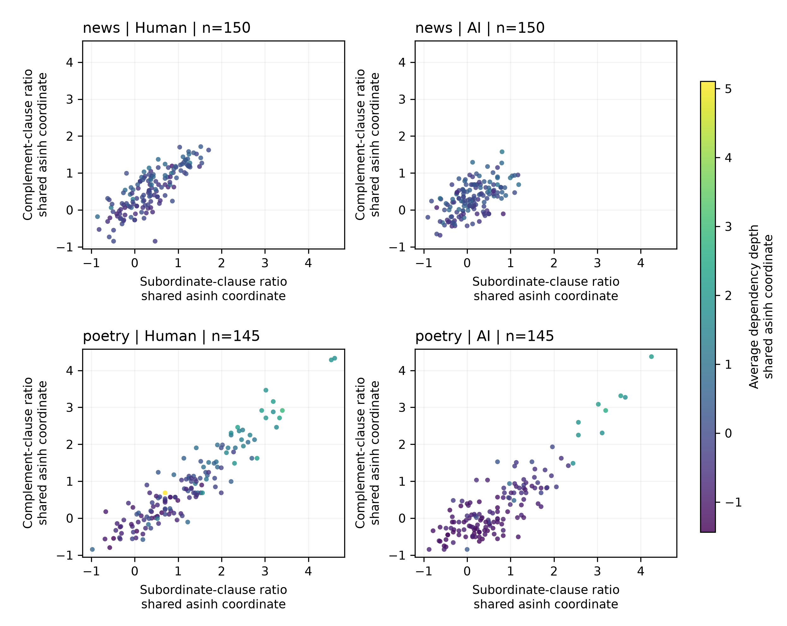
Figure S6. Subordinate and complement-clause ratios supply the axes; average dependency depth supplies colour. All three coordinates use the common discovery-fitted asinh transform. Shared clause counts qualify interpretation. Every eligible final document is retained. Axes and colours, where applicable, share their full range across all eight genres and both classes. No final response curve was fitted. Each panel contains 150 documents except poetry with 145.
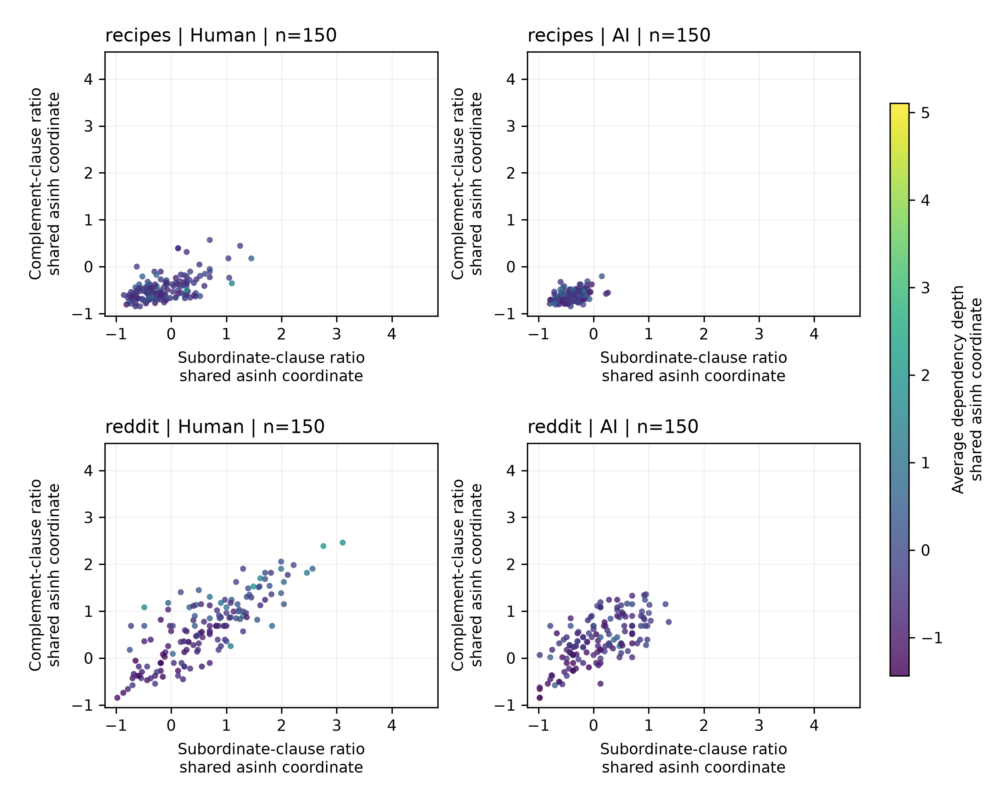
Figure S7. Subordinate and complement-clause ratios supply the axes; average dependency depth supplies colour. All three coordinates use the common discovery-fitted asinh transform. Shared clause counts qualify interpretation. Every eligible final document is retained. Axes and colours, where applicable, share their full range across all eight genres and both classes. No final response curve was fitted. Each panel contains 150 documents except poetry with 145.
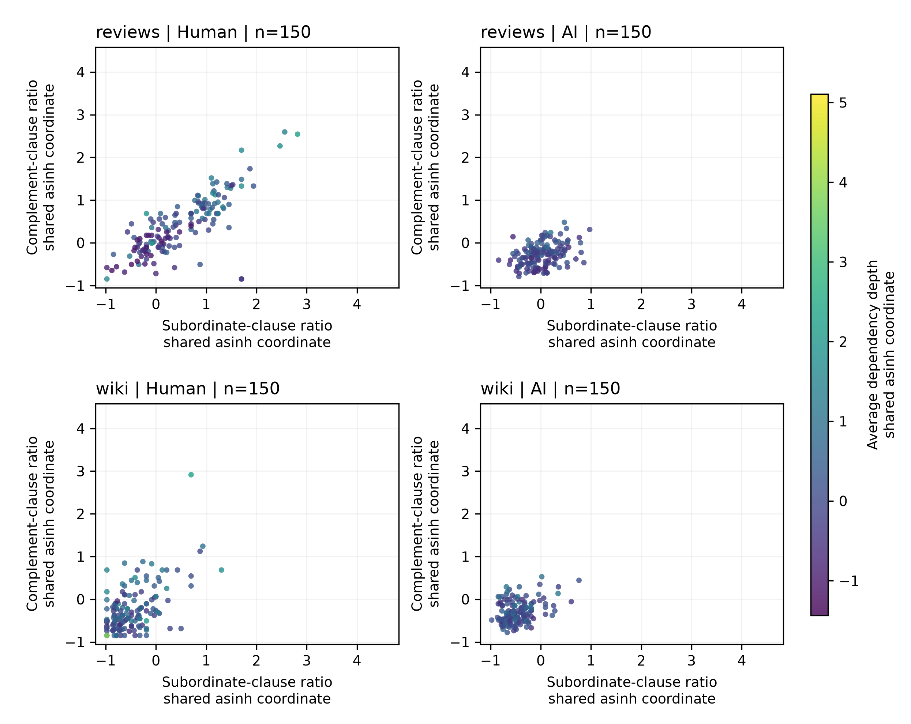
Figure S8. Subordinate and complement-clause ratios supply the axes; average dependency depth supplies colour. All three coordinates use the common discovery-fitted asinh transform. Shared clause counts qualify interpretation. Every eligible final document is retained. Axes and colours, where applicable, share their full range across all eight genres and both classes. No final response curve was fitted. Each panel contains 150 documents except poetry with 145.S01 · Local modifier-band width · all eight genres
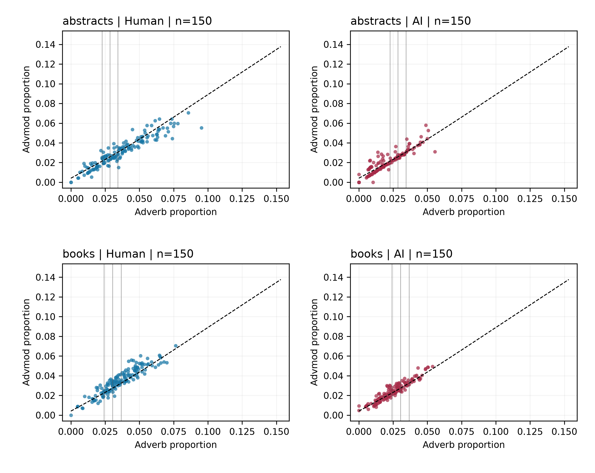
Figure S9. Raw adverb and advmod proportions supply the axes. The dashed line is the frozen pooled discovery spine; vertical lines mark the frozen common-position anchors. The endpoint uses local residual widths with recorded support, rather than the full displayed band. Every eligible final document is retained. Axes and colours, where applicable, share their full range across all eight genres and both classes. No final response curve was fitted. Each panel contains 150 documents except poetry with 145.
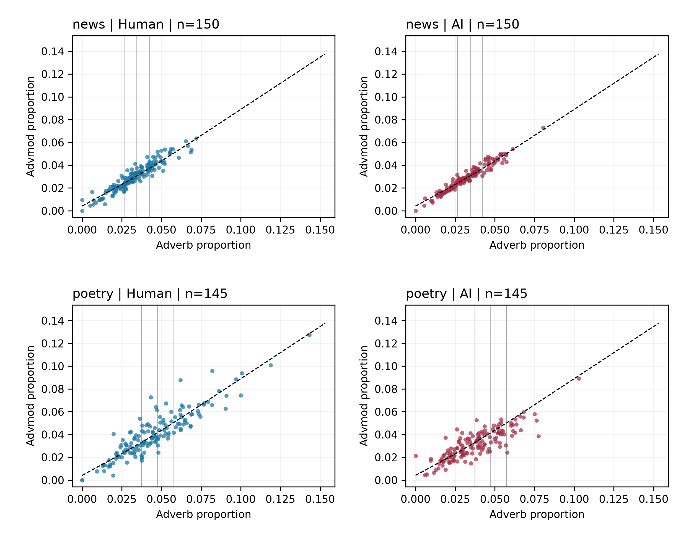
Figure S10. Raw adverb and advmod proportions supply the axes. The dashed line is the frozen pooled discovery spine; vertical lines mark the frozen common-position anchors. The endpoint uses local residual widths with recorded support, rather than the full displayed band. Every eligible final document is retained. Axes and colours, where applicable, share their full range across all eight genres and both classes. No final response curve was fitted. Each panel contains 150 documents except poetry with 145.
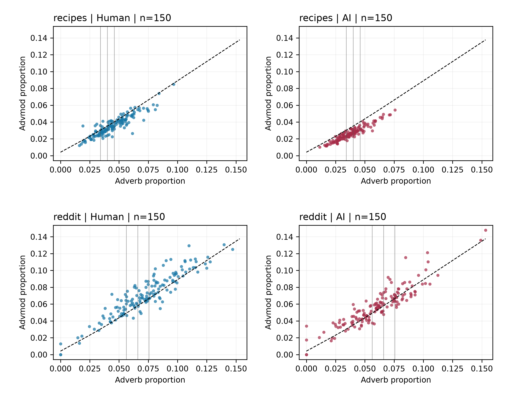
Figure S11. Raw adverb and advmod proportions supply the axes. The dashed line is the frozen pooled discovery spine; vertical lines mark the frozen common-position anchors. The endpoint uses local residual widths with recorded support, rather than the full displayed band. Every eligible final document is retained. Axes and colours, where applicable, share their full range across all eight genres and both classes. No final response curve was fitted. Each panel contains 150 documents except poetry with 145.
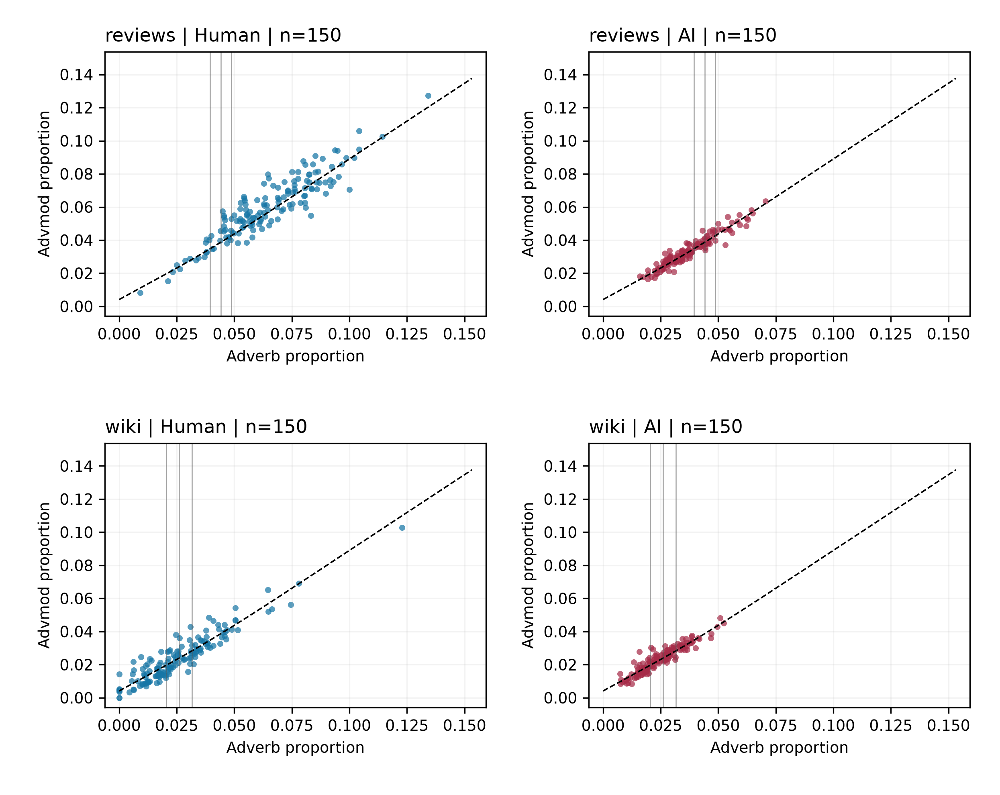
Figure S12. Raw adverb and advmod proportions supply the axes. The dashed line is the frozen pooled discovery spine; vertical lines mark the frozen common-position anchors. The endpoint uses local residual widths with recorded support, rather than the full displayed band. Every eligible final document is retained. Axes and colours, where applicable, share their full range across all eight genres and both classes. No final response curve was fitted. Each panel contains 150 documents except poetry with 145.Four frozen components and genre uncertainty
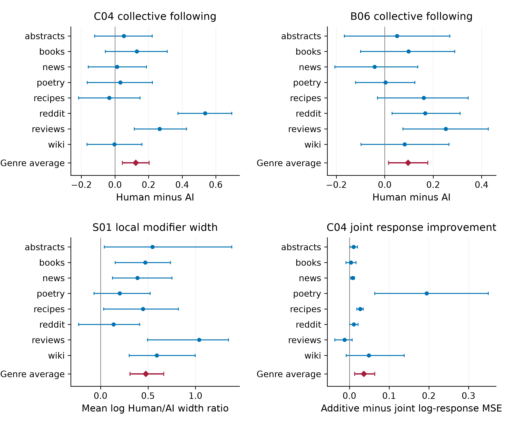
Genre intervals are unadjusted; equal-genre average intervals adjust across the four primary endpoints. Effects have different units. The observations and intervals are unchanged.
Scope. New source groups come from genres already seen in development, within one recorded historical ChatGPT configuration. The exact model version is unavailable. These data support the specified components, with reversals and uncertainty; they establish neither universal invariance, complete conditional geometry nor a calibrated detector.
Feature definitions and discovery-cohort audit
Constants, aliases and proportional measurements remain available for inspection and do not constitute new interactions. Class/genre midranks are a separate dependence diagnostic, not preprocessing for class-unknown predictions. The stop_word_ratio feature uses the custom FUNCTION_WORDS list, while run-length features use spaCy STOP words; their lexicons differ.
This public explorer serves numerical measurements and document/source IDs required for the plots. Manuscripts, notebooks, CSV exports and research archives are not hosted here. The complete tuples and summaries are unchanged by publication.